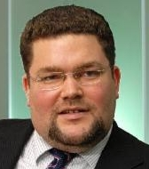

{{#setTitle}}
The Team – Prometheus Capital Partners
{{/setTitle}}
The Team
Levan
Vasadze, Chairman
Levan
has over 20 years of experience in private equity, investment banking and CEO operations in Russia
and the CIS.
Earlier,
he was CEO of the insurance company ROSNO culminating in a sale to Allianz at a 43X multiple of
Allianz’ initial investment. Prior to that,
Levan was First Vice President of Sistema Corporation, the largest non-energy conglomerate of
Russia. At Sistema Levan, as its First Vice President, was in charge of Corporate Strategy and
Development of the conglomerate. He led four public offerings of Sistema affiliates on the London
Stock Exchange and one on the NYSE. Levan
holds an MBA from Emory University in Atlanta and a MS in geophysics from Tbilisi State
University.
Tom
Kosco, Senior Partner
Former
CEO of Pacific Toxicology Laboratories, MD of Creditanstalt Moscow, Partner in Kirkland & Ellis
law firm.
Tom is a founding partner of Prometheus Capital. From 2004 until 2008,
he was CEO and principle shareholder of Pacific Toxicology Laboratories in Los Angeles. Earlier, Tom
was a Managing Director and co-founder of the Moscow office of Creditanstalt Investment Bank where
he was in charge of government debt trading. Tom began his career as an attorney at Kirkland &
Ellis in Chicago where he was a partner in the corporate transactions department. Tom has MBA and JD
degrees from the University of Chicago and BS in materials science from Rice University in
Houston.

Dmitriy Manakov,
Senior Partner
Ex-McKinsey & Co consultant with vast industrial
and analytical experience. Former Head of the office of CEO at TNK-British Petroleum. Physics
Graduate from Moscow Physical-Technological University and Physics and MBA graduate from Georgia
Tech University, Atlanta USA.